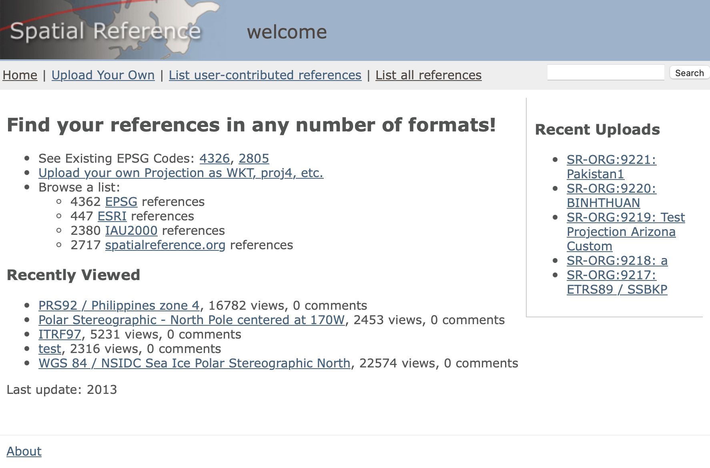

Пространственная привязка и создание объектов
Основы геоинформатики. Лекция 3
Пространственная привязка
- Пространственная привязка (ГОСТ Р 70316-2022 (ИСО 19112:2019) 2022)
-
Описание позиции в реальном мире.
Пространственная привязка может быть осуществлена двумя основными способами:
- с использованием координат;
- посредством географических идентификаторов.
При использовании привязки по координатам необходимо описание координатно системы отсчета.
Координатная система отсчета (КСО)
При описании координатной системы отсчета последовательно указываются:
- Эллипсоид вращения — тело, по отношению к которому вычисляются геодезические координаты точек (широта, долгота)
- Исходные геодезические даты (датум) — параметры положения эллипсоида в теле Земли
- Географическая система координат — включает датум, положение начального меридиана и единицы измерения широт и долгот
- Проекция — математический способ перехода от геодезических (географических) координат к плоским прямоугольным.
- Плоская прямоугольная система координат — включает проекцию, ее параметры и единицы измерения координат.
Операции с КСО
При работа с пространственными данными используется 4 основных операции на КСО:
Создание — позволяет сопроводить данные информацией о том, в какой системе хранятся координаты объектов.
Переопределение — используется в случае, если КСО указана неправильно. Например, данные хранятся в градусах, а в параметрах указано, что это проекция Меркатора.
Чтение — используется программным обеспечением для того чтобы правильно позиционировать объекты относительно референцного тела (Земли).
Преобразование — используется для получения нового набора данных в другой системе координат.
Преобразование координат
Преобразование координат включает три различных операции:
Трансформирование — пересчет географических координат с одного датума на другой.
Проецирование — от географических координат к плоским прямоугольным.
Обратное проецирование — от плоских прямоугольных координат к географическим.
Форматы описания
Распространены 3 формата описания координатных систем отсчета:
PROJ.4 String — представление в виде строки параметров.
WKT (Well-Known Text) — представление в виде иерархического списка. Это наиболее полный формат описания системы координат, который рекомендуется к использованию для избежания неоднозначностей.
EPSG (European Petroleum Survey Group) — представление в виде числового кода.
Для поиска КСО в перечисленных форматах представления удобно воспользоваться порталом spatialreference.org.
PROJ.4 String
PROJ.4 String — строковый формат представления информации о КСО, введенный в библиотеке PROJ, начиная с версии 4. Основные параметры:
+datum Датум
+ellps Эллипсоид
+lat_0 Широта стандартной параллели
+lat_1 Широта первой стандартной параллели
+lat_2 Широта второй стандартной параллели
+lat_ts Широта нулевых искажений
+lon_0 Центральный меридиан
+proj Проекция
+units Единицы измерения координат
+vunits Единицы измерения высот
+x_0 Восточное указание
+y_0 Северное указание
+zone Номер зоныPROJ.4 String — примеры
- Географические координаты в СК WGS84 (без проекции):
+proj=longlat +datum=WGS84 +no_defs- Проекция Web Mercator (Google Maps, Яндекс.Карты и т.д.):
+proj=merc +a=6378137 +b=6378137 +lat_ts=0 +lon_0=0 +x_0=0 +y_0=0 +k=1 +units=m +nadgrids=@null +wktext +no_defs- Коническая равнопромежуточная проекция:
+proj=eqdc +lat_0=0 +lon_0=0 +lat_1=60 +lat_2=60 +x_0=0 +y_0=0 +datum=WGS84 +units=m +no_defs- Проекция UTM, зона 37:
+proj=utm +zone=37 +datum=WGS84 +units=m +no_defsWKT (Well-Known Text)
WKT основан на следующих принципах.
Каждый объект представляется в виде токена, состоящего из ключевого слова, за которым следует множество атрибутов объекта.
Некоторые объекты состоят из других объектов, поэтому результат может состоять из нескольких уровней вложенности.
KEYWORD1[
attribute1,
KEYWORD2[
attribute2,
attribute3,
KEYWORD3[
attribute4
]
]
]WKT (Well-Known Text)
Наиболее часто встречающиеся токены
| Токен | Назначение |
|---|---|
GEOGCRS |
Географическая координатная система отсчета |
PROJCRS |
Проецированная координатная система отсчета |
BASEGEOGCRS |
Географическая КСО, на которой основана проецированная |
DATUM |
Датум |
ELLIPSOID |
Эллипсоид |
PRIMEM |
Начальный меридиан |
CS |
Система координат (декартова, сферическая, эллипсоидальная и т.д.) |
WKT (Well-Known Text)
| Токен | Назначение |
|---|---|
ANGLEUNIT |
Единица измерения углов |
LENGTHUNIT |
Единица измерения длин |
CONVERSION |
Преобразование (проекция + параметры) |
METHOD |
Проекция |
PARAMETER |
Параметр |
USAGE |
Область применения |
REMARK |
Ремарка (здесь могут быть любые символы!) |
ID |
Идентификатор |
AXIS |
Ось |
ORDER |
Порядок оси |
WKT (Well-Known Text)
Пример: географическая КСО
GEOGCRS["NTF (Paris)",
DATUM["Nouvelle Triangulation Francaise",
ELLIPSOID["Clarke 1880 (IGN)",6378249.2,293.4660213]
],
PRIMEM["Paris",2.5969213],
CS[ellipsoidal,2],
AXIS["latitude",north,ORDER[1]],
AXIS["longitude",east,ORDER[2]],
ANGLEUNIT["grad",0.015707963267949],
REMARK["Nouvelle Triangulation Française"]
]Данная система отсчета использует нестандартный меридиан (Парижский) и угловые единицы (грады).
WKT (Well-Known Text)
Пример: проецированная КСО (проекция Мольвейде)
PROJCRS["World_Mollweide",
BASEGEOGCRS["WGS 84",
DATUM["World Geodetic System 1984",
ELLIPSOID["WGS 84",6378137,298.257223563,
LENGTHUNIT["metre",1]]],
PRIMEM["Greenwich",0,
ANGLEUNIT["Degree",0.0174532925199433]]],
CONVERSION["World_Mollweide",
METHOD["Mollweide"],
PARAMETER["Longitude of natural origin",0,
ANGLEUNIT["Degree",0.0174532925199433],
ID["EPSG",8802]],
PARAMETER["False easting",0, LENGTHUNIT["metre",1],
ID["EPSG",8806]],
PARAMETER["False northing",0, LENGTHUNIT["metre",1],
ID["EPSG",8807]]],
CS[Cartesian,2],
AXIS["(E)",east, ORDER[1], LENGTHUNIT["metre",1]],
AXIS["(N)",north, ORDER[2], LENGTHUNIT["metre",1]],
USAGE[SCOPE["Not known."],AREA["World."], BBOX[-90,-180,90,180]],
ID["ESRI",54009]]EPSG
EPSG (European Petroleum Survey Group) — европейская рабочая группа нефтегазовой области, которая ведет реестр КСО с уникальными цифровыми кодами вида EPSG:xxxxxx.
Коды EPSG оказались удобны, поэтому используются повсеместно для быстрой инициализации проекций со стандартными параметрами.
Например, ранее рассмотренные проекции имеют коды:
- WGS84:
EPSG:4326 - Web Mercator:
EPSG:3857 - UTM:
EPSG:326.., например для UTM 37N:EPSG:32637
Описание КСО в QGIS

Описание КСО в QGIS

spatialreference.org
Удобный ресурс для поиска описаний координатных систем отсчета

proj.org
Сайт библиотеки PROJ имеет описания проекций

Coordinate operations —> Projections
projectionwizard.org
Веб-приложение для выбора оптимальной проекции

Координатная привязка
- Координатная привязка
-
Преобразование координат, которое привязывает пространст-венные объекты к их местоположению в реальном мире.
- Информация о СК отсутствует или ошибочна (например — сканированная карта).
- Информация о СК имеется, но координаты объектов искажены и требуют корректировки (например, есть систематическая ошибка в измерениях).
Процесс координатной привязки также называют регистрацией.
Опорные точки
Координатная привязка выполняется по опорным точкам.
Необходимо указать несколько пар точек.
Каждая пара создается в следующем порядке:
сначала в текущем положении (p)
затем в истинном положении (q).
Полученные вектора используются для трансформации координат.
Аффинное преобразование
- Аффинное преобразование
-
Отображение плоскости или пространства в себя, при котором параллельные прямые переходят в параллельные прямые, пересекающиеся — в пересекающиеся, скрещивающиеся — в скрещивающиеся
Позволяет решать простые случаи привязки:
Неаффинные преобразования
В тех случаях, когда аффинных преобразований недостаточно, могут быть использованы более сложные:

Метод резинового листа является наиболее гибким и позволяет делать локализованные трансформации объектов (изображений).
Опорные точки
Принципы выбора опорных точек:
- Количество точек должно быть больше минимально необходимого. Это позволит оценить погрешность трансформации. Например для аффинного преобразования вместо 3 желательно набрать как минимум 4 точки.
- Точки должны располагаться относительно равномерно по полю привязываемого объекта. Необходимы точки как по краям, так и в центре.
- Точки не должны все располагаться на одной прямой. Чем сильнее точки тяготеют к такой конфигурации, тем хуже будет качество привязки.
Создание объектов
Создание векторных пространственных объектов осуществляется разными способами. Наиболее распространены:
Автоматическое конструирование на основе координат.
Геокодирование — преобразование географических идентификаторов в координаты.
Векторизация — создание объектов в ручном режиме, либо путем преобразования из других моделей данных.
УточнениеВекторизации-преобразованию обычно подвергаются растровые данные.
Геометрические операции — получение новых векторных объектов в результате операций над существующими объектами.
Автоматическое конструирование
Геодезические пункты — точечные объекты
Исходные данные

Simple Feature
Simple feature collection with 2 features and 2 fields
Geometry type: POINT
Dimension: XY
Bounding box: xmin: 36.34953 ymin: 55.19612 xmax: 36.37369 ymax: 55.2188
Geodetic CRS: WGS 84
N Name geometry
<chr> <POINT [°]>
1 Африка (36.34953 55.19612)
2 Сенокос (36.37369 55.2188)Автоматическое конструирование
Маршрут — линейный объект
Исходные данные

Simple Feature
Geometry set for 1 feature
Geometry type: LINESTRING
Dimension: XY
Bounding box: xmin: 36.34891 ymin: 55.19607 xmax: 36.38429 ymax: 55.21918
Geodetic CRS: WGS 84
LINESTRING (36.38314 55.20975, 36.38314 55.20976, 36.3832 55.20997, 36.38321 55.21001, 36.38321 55.21002, 36.38325 55.21007...Автоматическое конструирование
Поле — площадной объект
Исходные данные

Simple Feature
Geometry set for 1 feature
Geometry type: POLYGON
Dimension: XY
Bounding box: xmin: 36.37781 ymin: 55.18984 xmax: 36.38543 ymax: 55.19887
Geodetic CRS: WGS 84
POLYGON ((36.38543 55.19842, 36.38538 55.19825, 36.38533 55.19806, 36.38528 55.19785, 36.38525 55.19763, 36.38513 55.19745,...Автоматическое конструирование

Пример использования — построение карт по результатам полевых работ.
Сырые данные ГНСС-измерений содержат погрешности. Поэтому векторные объекты, созданные на их основе, часто нуждаются в редактировании, в том числе с использованием геометрических операций.
Географические идентификаторы
Увязаны с местоположением, идентифицируемым географическими объектами. Взаимосвязь с объектом может быть установлена следующими основными способами:
локализацией, когда конкретная позиция находится внутри географического объекта, например в стране;
локальными измерениями, когда позиция определена относительно фиксированных точек географических объектов, например вдоль улицы на заданном расстоянии от пересечения с другой улицей. Этот аспект известен как линейная привязка;
слабо связанным способом, когда позиция имеет нечеткую взаимосвязь с географическими объектами, например рядом со зданием или между двумя зданиями.
Геокодирование
- Географический идентификатор (ГОСТ Р 70316-2022 (ИСО 19112:2019) 2022)
-
Пространственная привязка в виде текстового обозначения или кода, определяющего местоположение
- Географический справочник (газеттир)
-
Реестр экземпляров местоположений одного или более подтипов местоположений, содержащих некоторую информацию о позиции.
Географический справочник почтовых адресов и их местоположения обычно называют адресным локатором.
Адресное геокодирование

Адресный локатор хранит набор набор векторных объектов, для каждого из которых задано структурированное описание адреса, разбитое на компоненты: индекс, регион, нас. пункт, улица и т.д.
Геокодер находит в локаторе наиболее вероятное местоположение, соответствующее переданному адресу.
Адресное геокодирование
Адресное геокодирование позволяет автоматизировать преобразование текстовых данных в пространственные.
Исходные данные
Результаты геокодирования

Векторизация
Векторизация может осуществляться в автоматическом, автоматизированном и ручном режиме.
Автоматическая векторизация используется, например, при конвертации покрытий, хранящих категориальные данные, в набор векторных объектов.

Векторизация
Векторизация может осуществляться в автоматическом, автоматизированном и ручном режиме.
Автоматизированная векторизация используется, например, при выделении объектов на космических снимках и сканированных картах. Результирующие объекты требуют редактирования.
Yurtseven и др. (2019)
Векторизация
Векторизация может осуществляться в автоматическом, автоматизированном и ручном режиме.
- Ручная векторизация используется, когда автоматизированные методы не дают удовлетворительного результата, или когда надо создать новый векторный объект, для которого нет образца.
Ручная векторизация похожа на работу в векторных графических редакторах. Объекты можно не только создавать, но также разрезать, присоединять, вырезать в них дырки и т.д.
Цифрование
- Цифрование
-
Получение цифрового представления объектов.
Классические пример цифрования — получение растра топографической карты по результатам сканирования.
Цифрование — более общий термин, чем векторизация. Для обозначения процесса создания векторных объектов необходимо употреблять термин векторизация.
Словарик
Координатная система отсчета
Проекция
Координатная привязка
Аффинное преобразование
Проективное преобразование
Полином. преобразование
Географический справочник
Адресный локатор
Геокодирование
Векторизация
Цифрование
Coordinate reference system
Projection
Georeferencing
Affine transformation
Projective transformation
Polynomial transformation
Gazetteer
Address locator
Geocoding
Vectorization
Digitizing